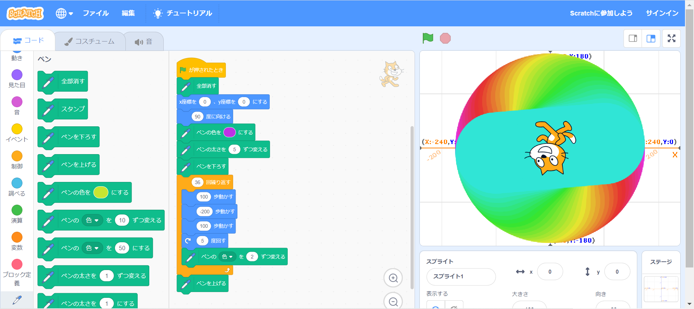
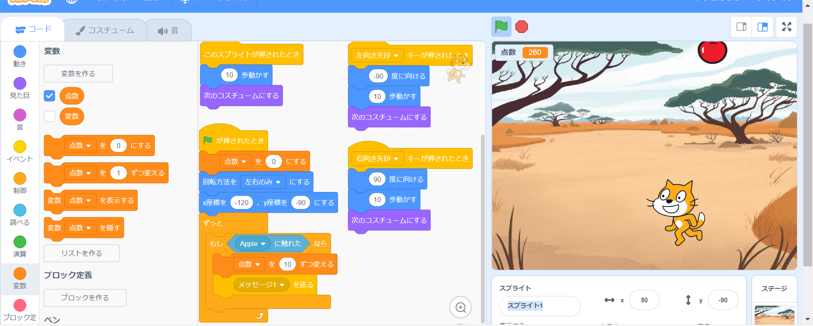

1週目のレポート ： 公大高専１年実習I-1
3B班33番 四つ葉
第1週目
1-1 サイエンスアート

1.内容
スクラッチを使ってネコの動きに合わせて線を書くプログラム，ネコを移動させるプログラム，移動に合わせて線を引くプログラム，書くたびに先の色を変えるプログラム，繰り返し移動させて図形を描くプログラムを作った.
2.感想
スクラッチは高専に入学して何回か使ったことがあったので，難なく使うことができた．もっと上を目指して，短時間で正確に，よりすごいプログラミングができるようになりたいと思った．
1-2 ゲーム

1.内容
落下位置と落下速度がランダムに設定されたリンゴの落下地点に矢印キーでネコを移動させる．そしてネコがリンゴに触れたときにリンゴが消え，スコアがどんどん溜まっていくという簡単なゲームのプログラムを作成した．
2.感想
猫とリンゴが触れたとき，バグ等なくリンゴが消え，スコアもしっかり反映されていることに感動を覚えた．もっと高難度なゲームのプログラムを作成してみたいと思った．
1-3 ホームページ作成
私のホームページ
1.内容
GitHubというサイトを用いて自分でオリジナルのホームページを作成した．
2.感想
ホームページの作成は複雑で難しいことなのかなと思っていたが，GitHubを使って手順に沿って作成すると，簡単にオリジナルのホームページを作ることができて，便利なサイトがあるんだなと思った．
これから，自分オリジナルのホームページにどんどん更新していって，うまく使いこなしたり，活用していきたいと思った．